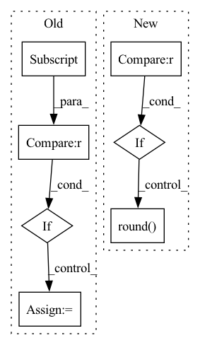

Pattern ID :12178
Before Change
a = nn.Softmax()(outs)
for ii in range(len(outs)):
total += 1
if outs[ii].tolist().index(max(outs[ii])) == y_batch[ii] :
correct += 1
pts.append([a[ii][1], y_batch[ii]])
print((float(correct)/total))
if auprc:After Change
pts.append([a[ii][1], y_batch[ii]])
if task == "classification":
pred.append(torch.argmax(outs, 1))
elif task == "multilabel" :
pred.append(torch.sigmoid(outs).round() )
true.append(j[-1])
if pred:
pred = torch.cat(pred, 0).cpu().numpy()In pattern: SUPERPATTERN
Frequency: 3
Non-data size: 7
Instances Fragment ID: 41151595
Project Name: pliang279/multibench
Commit Name: e8df377596458671f3a074b2f5d41a118b3fe6ae
Time: 2021-06-06
Author: ztwu_nil@zju.edu.cn
File Name: training_structures/MFM.py
M Class Name: AnonimousClass
N Class Name: AnonimousClass
M Method Name: test_MFM(4)
N Method Name: test_MFM(3)
M Parent Class:
N Parent Class:
M File Name: training_structures/MFM.py
N File Name: training_structures/MFM.py
M Start Line: 85
M End Line: 103
N Start Line: 115
N End Line: 144
Before Change
// Quantize the observation to avoid numerical artifacts near 0 and 1.
quantized_obs = None
if experiment["response"] is not None : // during inference
quantized_obs = (experiment["response"] * quantization_bins).round()
quantized_obs = pyro.sample(
"quantized_response",
dist.Binomial(quantization_bins, logits=logits),After Change
// Quantize the observation to avoid numerical artifacts near 0 and 1.
quantized_obs = None
response = experiment.get("response")
if response is not None : // during inference
quantized_obs = (response * quantization_bins).round()
quantized_obs = pyro.sample(
"quantized_response",
dist.Binomial(quantization_bins, logits=logits),
obs=quantized_obs, Fragment ID: 41151594
Project Name: pyro-ppl/pyroed
Commit Name: f2f01f55b2bbd7316b87583d30df778acdef3a86
Time: 2022-03-14
Author: fritz.obermeyer@gmail.com
File Name: pyroed/models.py
M Class Name: AnonimousClass
N Class Name: AnonimousClass
M Method Name: model(0)
N Method Name: model(0)
M Parent Class:
N Parent Class:
M File Name: pyroed/models.py
N File Name: pyroed/models.py
M Start Line: 36
M End Line: 107
N Start Line: 38
N End Line: 98
Before Change
a = nn.Softmax()(outs)
for ii in range(len(outs)):
total += 1
if outs[ii].tolist().index(max(outs[ii])) == y_batch[ii] :
correct += 1
pts.append([a[ii][1], y_batch[ii]])
print((float(correct)/total))
if auprc:After Change
pts.append([a[ii][1], y_batch[ii]])
if task == "classification":
pred.append(torch.argmax(outs, 1))
elif task == "multilabel" :
pred.append(torch.sigmoid(outs).round() )
true.append(j[-1])
if pred:
pred = torch.cat(pred, 0).cpu().numpy() Fragment ID: 41151593
Project Name: pliang279/multibench
Commit Name: 08e57215227c5575c74f7942e287340eb5e50eb7
Time: 2021-06-06
Author: ztwu_nil@zju.edu.cn
File Name: training_structures/MFM.py
M Class Name: AnonimousClass
N Class Name: AnonimousClass
M Method Name: test_MFM(4)
N Method Name: test_MFM(3)
M Parent Class:
N Parent Class:
M File Name: training_structures/MFM.py
N File Name: training_structures/MFM.py
M Start Line: 85
M End Line: 103
N Start Line: 115
N End Line: 144